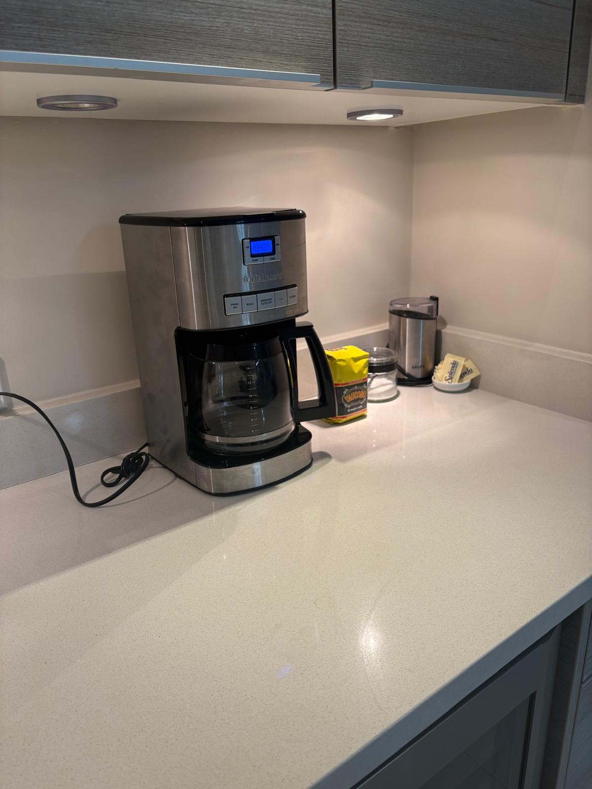
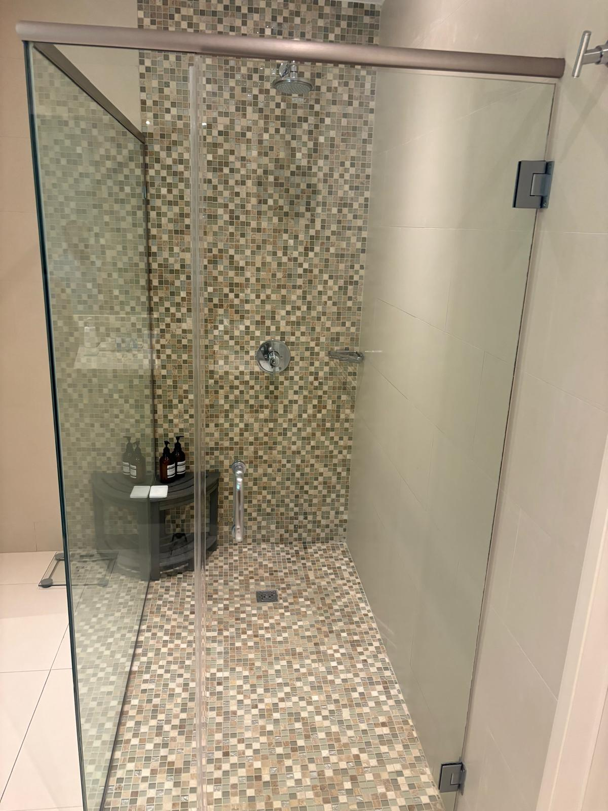
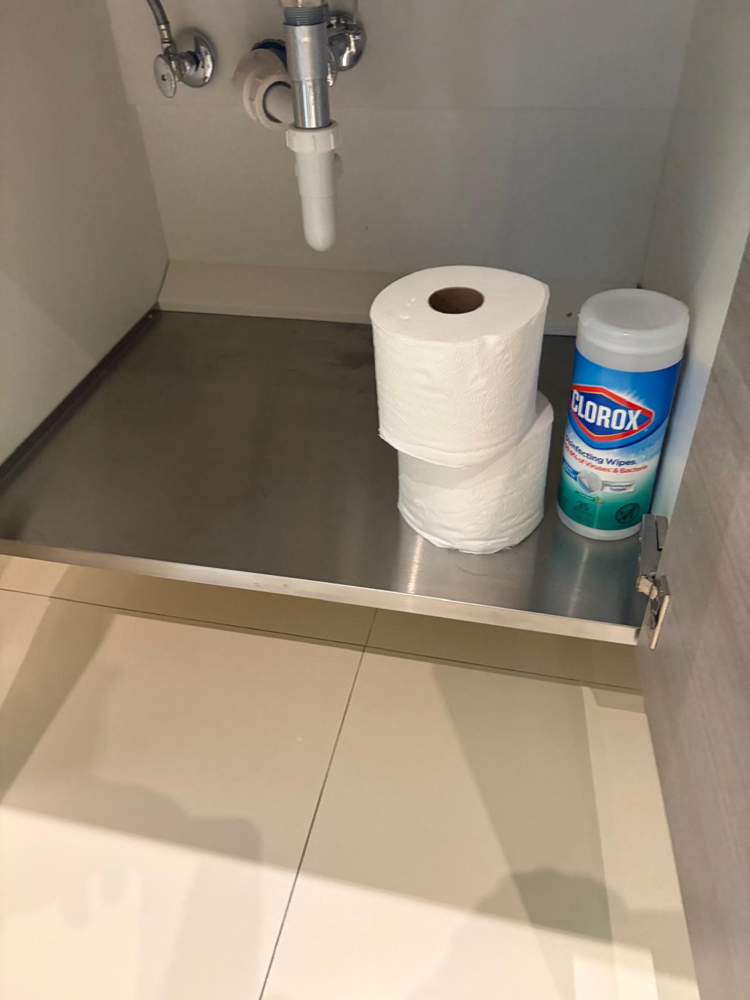
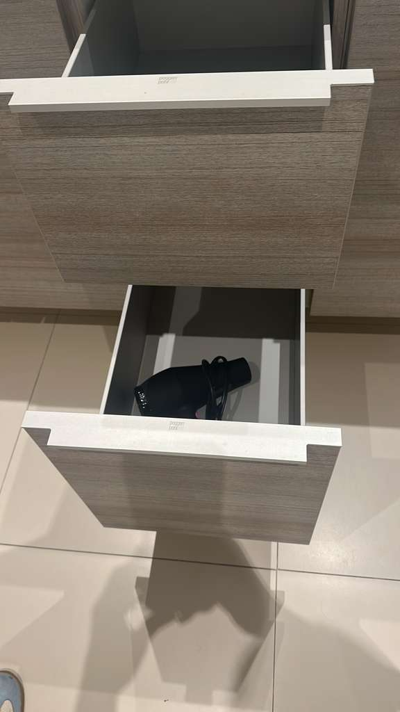
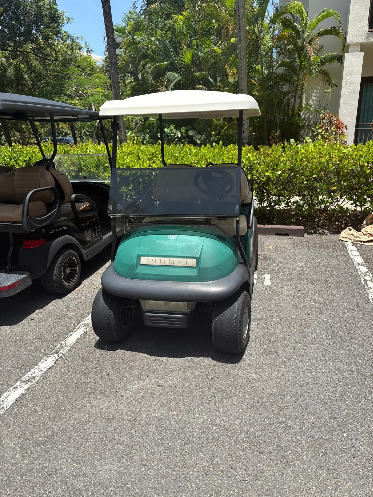

General
Áreas Sociales
Entrada
Cocina
Amenidades de Bienvenida
Fregadero
Triturador de Basura
Topes de Cocina
Área de Estufa
Luces Debajo de Gabinetes
Primer Cajón Izquierda de Fregadero
Segundo Cajón Izquierda de Fregadero
Tercer Cajón Izquierda de Fregadero
Gabinete de Fregadero de la Cocina
Lavaplatos
Cajón Derecha del Lavaplatos
Gabinete Derecha del Lavaplatos
Gabinete Izquierda de Estufa
Horno
Gabinete Derecho Estufa
Gabinete con Repisas Rotatorias
Gabinete al Lado Izquierdo de la Nevera
Gabinete Encima de Tope a la Izquierda de Microondas
Gabinete Encima del Microondas
Microondas
Gabinete Encima de Tope a la Derecha de Microondas
Primer Gabinete Izquierdo de la Nevera
Segundo Gabinete Izquierdo de la nevera
Refrigerador
Congelador
Área de Bar
Tope de Bar

Fregadero Pequeño - (Mini Bar)
Gabinete Debajo del Fregadero Pequeño
Vinera
Gabinete Derecha de Vinera
Gabinete Izquierdo Encima de Tope de Bar
Gabinete Derecho encima de Tope de Bar
Sala / Comedor
Comedor, Lámparas y Bombillos
Sala
Terraza
Dormitorio Principal
Baño del Dormitorio Principal
Ducha

Bañera
Tope de Lavamanos
Gabinetes



Área de Inodoro y Bidet
Pasillo de Oficina
Escritorio
Armario Huéspedes
Área de Cama
Baño a la Derecha en el Pasillo
Tope de Lavamanos
Gabinete de Lavamanos
Ducha
Primer Dormitorio Frente a Pasillo
Mesas de Noche
Mueble de TV
Armario de Dormitorio Frente a Pasillo
Baño Jack & Jill
Tope de Lavamanos
Gabinete de Lavamanos
Segundo Dormitorio Después de Jack & Jill
Mueble de TV
Armario de Dormitorio
Owner´s Closet
Closets de Aires Acondicionados
Cuarto de Lavado (Laundry)
Lavadora y Secadora
Carro de Golf
